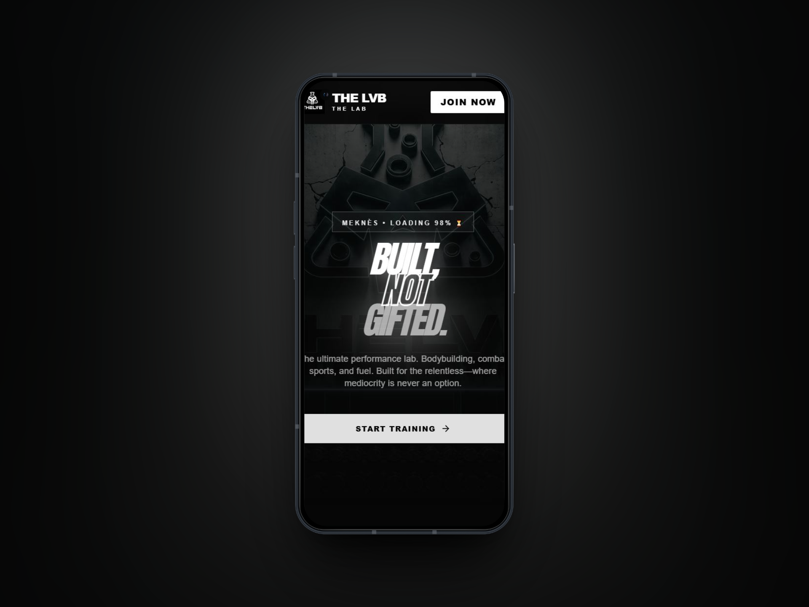
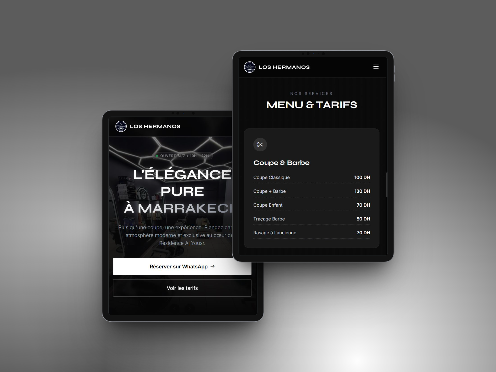
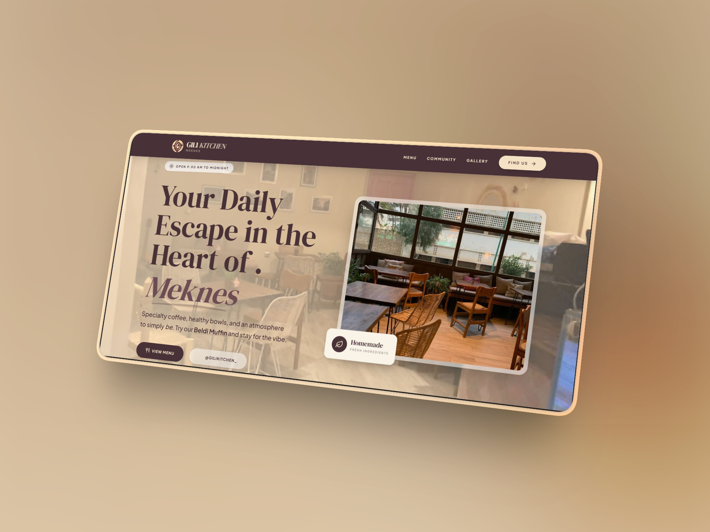
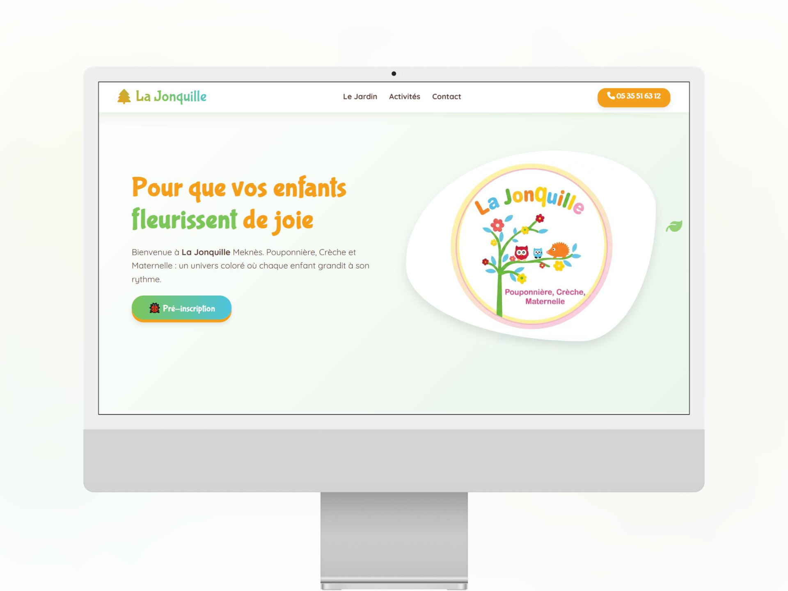

We design and develop custom-coded websites that elevate local brands into global experiences. Quality over quantity. Simplicity over complexity.
VAYRO Studio is not a traditional marketing agency. We are a modern digital brand focused exclusively on high-end, custom-coded environments.
We believe that your online presence should be an investment, not an afterthought. By stripping away visual clutter and relying on precise geometry, typography, and purposeful motion, we create websites that command authority and trust.
Pixel-perfect development from scratch. No bloated frameworks.
Lightning-fast load times optimized for modern search engines.

Fitness & Wellness
High-performance digital interface for a premium strength facility.

ming
Dark-mode editorial design and seamless booking experience.

Hospitality
Immersive visual storytelling for a specialty coffee brand.

Early Education & Care
An approachable, soft-toned experience designed to bridge the gap between busy parents and educational excellence.
Editorial-style layouts, perfect typography hierarchy, and intuitive user experiences that convert visitors into loyal clients.
Hand-coded HTML, Tailwind CSS, and vanilla JS. We don't rely on bloated site builders, ensuring ultimate speed and security.
Built from the ground up with semantic code, lightning-fast load times, and structured data to dominate local search rankings.
Understanding your business goals, analyzing competitors, and defining the precise architecture needed to outclass them.
Crafting the digital identity. We focus on minimalist, high-end aesthetics tailored perfectly to your premium positioning.
Translating design into flawless code. Implementing smooth micro-interactions and ensuring perfect responsiveness.
Rigorous testing across all devices. We deploy your new platform and provide the foundations for continuous digital growth.
Now booking select projects for 2026. Elevate your brand presence today.